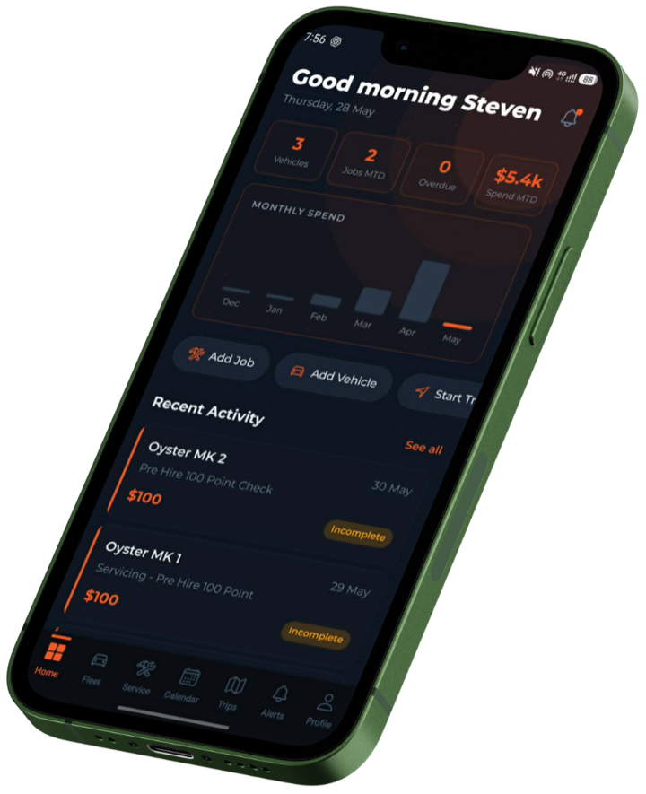
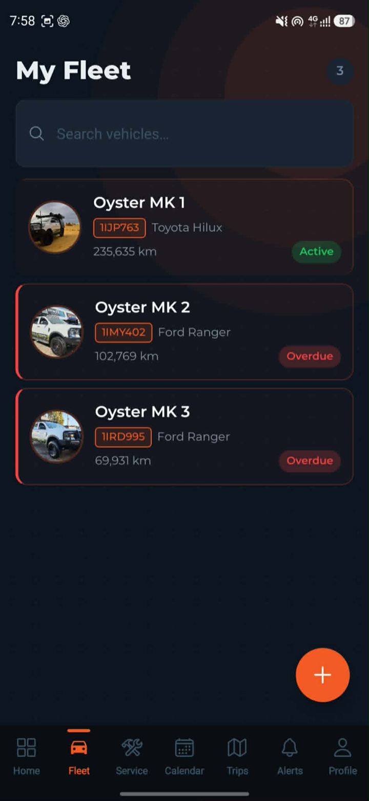

If you run a small fleet of 1–75 vehicles in Australia, FleetTrack Pro by Nightshift Systems is a fleet maintenance app built for your situation. It handles service interval reminders, AI-powered receipt scanning, GPS trip logging, registration and insurance compliance tracking, and fleet cost reporting — all from a mobile app on Android. It was built by an operator who runs a real fleet, not by a software company selling to enterprise.
The fleet management software market is dominated by platforms built for enterprise — 200-vehicle transport companies with a full-time fleet manager, a workshop, and an IT department. Most of those features are noise for a small operator. Here's what actually matters for a fleet of 1–75 vehicles in Australia.
Fleet maintenance happens in the field, at the mechanic, and at the fuel stop. The app needs to work comfortably on a phone in one hand, not require a laptop to log a service job.
Enterprise fleet systems take weeks to configure. For a small operator, setup should mean adding your vehicles, setting a few service intervals, and starting to log. No consultant required.
The point of tracking service intervals is the reminder, not the record. Look for km-based and time-based alerts per vehicle, surfaced clearly so overdue vehicles are obvious before they go out.
A vehicle's service history is useful. Knowing what it's cost in parts and labour per month, and how that compares across the fleet, is what drives actual decisions — like whether to repair or replace.
Most fleet software is priced in USD, which adds currency risk and accounting friction. Look for AUD pricing if you're an Australian small business.
Set multiple service intervals per vehicle. Overdue alerts surface in your fleet dashboard and maintenance calendar. The fleet view shows every vehicle's status at a glance.
Photograph a fuel docket, mechanic invoice, or parts receipt. AI extracts the cost and description automatically. It links to the vehicle. Free plan: 5/month. Paid plans: unlimited.
Start and stop trips from the app. Route, distance, and duration are recorded with GPS. Business and personal tagging built in for ATO mileage records.
Registration and insurance expiry tracked per vehicle with overdue warnings. Visible in the maintenance calendar alongside service due dates. Mark renewed in one tap. FleetTrack Pro by Nightshift Systems also supports custom compliance tracking fields beyond registration and insurance, including fire extinguisher expiry, roadworthy certificates, and any date-based requirement your fleet or industry requires.
Build custom inspection templates and have drivers complete them from the app. Each item can be ticked, noted, and photographed. Completed inspections are stored per vehicle with a timestamp and the driver's name. FleetTrack Pro includes customisable inspection checklists for pre-trip checks, post-trip inspections, and daily walkarounds, with photo attachments and configurable retention — useful for hire operators, construction fleets, and any business with chain-of-responsibility obligations.

Spreadsheets aren't fleet software. They're a workaround that makes sense when you have two vehicles and one person keeping the records. Once that number grows, or someone goes on leave, or someone adds a column in the wrong place, the spreadsheet breaks. Here's the honest comparison.
| Task | Spreadsheets | FleetTrack Pro |
|---|---|---|
| Service reminders | Manual check — or forgotten | Automatic, by km or time |
| Receipt tracking | Folder of photos or a shoebox | AI scan, auto-linked to vehicle |
| Trip logging | Manual entry or nothing | GPS with route and distance |
| Compliance dates | Calendar reminders, maybe | Built-in with overdue warnings |
| Cost per vehicle | Formulas you built once, then broke | Automatic per-vehicle breakdown |
| Setup time | Hours of formatting and formula writing | Add a vehicle, start logging |
| Maintenance | You maintain the spreadsheet | We maintain the app |
| PDF reports | Manual export and formatting | Generated automatically |
| Multi-user access | Shared file with version conflict risk | Role-based access, always in sync |
| Inspection checklists | Paper clipboard — if it makes it back | Digital checklists with photos and history |
FleetTrack Pro is a fleet maintenance app built for Australian small fleet operators running 1–75 vehicles, including trade businesses, 4WD hire operators, campervan rental fleets, and service vehicle fleets.
Plumbers, electricians, HVAC, and builders with work vehicles that need service tracking, compliance dates, and job cost capture. Fuel receipts from multiple vehicles across multiple jobs.
Built by a Perth 4WD hire operator. Service intervals before each hire, compliance tracked per vehicle, receipt scanning from regional mechanics, and per-vehicle cost reports for the accountant.
Mobile technicians, field service crews, and small delivery operators who need trip logs, service reminders, and per-vehicle cost visibility without a full transport management system.
Operators with 3–20 vehicles and no dedicated fleet manager. One person wearing multiple hats who needs the essentials handled automatically, not a fleet management career.

Every account starts with a 14-day free trial of the Pro tier — no credit card required. After the trial, your account downgrades to Free and your data stays. Upgrade any time from inside the app.
All prices AUD, ex. GST. Annual billing available — 2 months free. Full pricing details →
FleetTrack Pro by Nightshift Systems was built by the founder of Open Shell Adventures, a Perth-based 4WD adventure hire business operating in Western Australia. After years of tracking vehicle servicing across five 4WDs in spreadsheets, keeping mechanic invoices in a folder on the desktop, and missing insurance renewal dates because they were buried in a calendar reminder nobody checked — the decision was made to build something that actually worked for how a small operator runs things.
FleetTrack Pro is the result. Every feature in it existed as a real problem first — not as a feature on a product roadmap. The receipt scanning exists because receipts were getting lost. The service reminders exist because service dates were slipping. The compliance tracking exists because rego renewal notices were going to the wrong email address. It's used on real vehicles every week before it's released to anyone else.
"We use it every day on our own vehicles before we ask anyone else to trust it with theirs."
No credit card required. Add your vehicles and start logging. If Pro isn't right, the Free plan stays free — your data stays either way.
See plans & get started